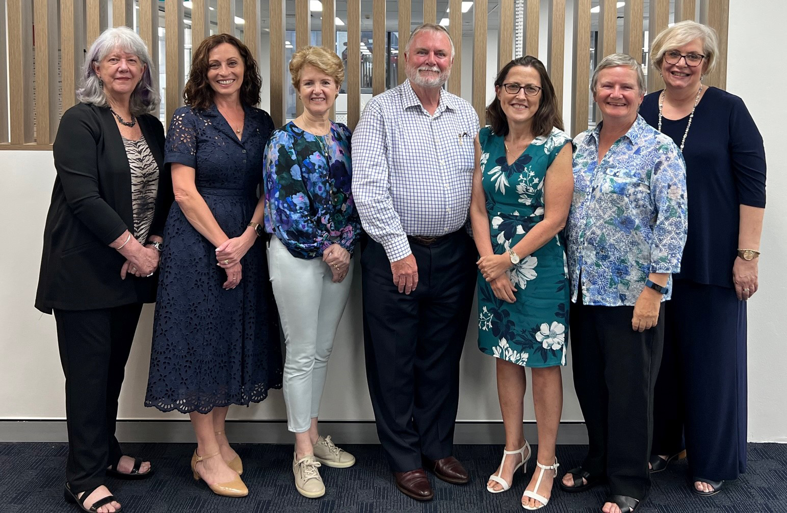

ICME-15 come and be countedIn this issue
Mark these dates in your diary now!7-14 July 2024 | ICC Sydney, Australia
|
||||

An Invitation to Australia from ICME-15 Convenor
I am delighted to invite you to Sydney, Australia where will be hosting the 15th International Congress on Mathematical Education (ICME-15) in 2024.
Held every four years, ICME has a long and proud history of being the meeting point for mathematics educators, curriculum developers, mathematicians, researchers in mathematics education, teachers, teacher educators, and resource producers.
ICME-15 will be an inclusive event at which people who are passionate about mathematics and statistics education can come together, and connect with like-minded colleagues from around the globe – to create lasting local, regional, and global legacies for our field.
ICME-15 is the flagship meeting of the International Commission on Mathematical Instruction (ICMI) which is thrilled that Sydney will host the 2024 congress for the first time. Australian specialists working in mathematics education are especially excited to the welcome opportunity to showcase their expertise to their international peers.
The Convenor of ICME-15, Professor Kim Beswick, Head of the School of Education at the University of New South Wales, and the Chair of the Local Organising Committee, Will Morony, former CEO of the Australian Association of Mathematics Teachers, are committed to championing the aims of the Congress which are:
“Sharing practices and experiences, learning from each other, and finding common ground for advancing mathematics education in the region and across the globe by providing a platform to address the challenges for mathematics education shared by many countries.”
Our aspirations for ICME-15 are to:
- Inspire a new generation of mathematics educators
- Respect and engage teachers
- Ensure every student has a positive mathematics education
- Improve mathematics teaching in schools
- Foster equity and diversity in mathematics education from school to tertiary level
- Create and foster public engagement with mathematics
- Engage with business and industry
- Create global connections
- Promote mathematical content and thinking that can be used to STEM problems
- Celebrate and learn from First Peoples' culture and connections to mathematics
It is an honour and a great pleasure for me to invite you to what will be a truly unique and exciting initiative for mathematics and statistics education in Australia and the Asia-Pacific region.
We can’t wait to see you in Sydney in 2024!
Meet our Local Organising Committee
The opportunity to host ICME-15 will provide a valuable and timely opportunity for Australia to discuss our National efforts in improving and delivering quality STEM education for future generations and for Australian educators, researchers and policy makers to learn from the experiences of other countries.
What’s in the program: Plenary Panels and Survey Topics
In recognition of the substantial and continuing contribution to the growth of the field of Mathematics Education, there will be four plenary lectures and two plenary panels.
Plenary panelists will promote the development of understanding between different communities by opening up debate in a contested area of work in the field of Mathematics Education:
Plenary Panel 1: Mathematics education effectively responds to humanity's problems.
Plenary Panel 2: What counts as evidence in mathematics education?
Surveys emphasise new developments and progress on key themes or issues that have been emerging in the last three or four ICMEs by surveying the state-of-the-art in relation to the theme or issue. Particular emphasis will be on identifying and characterizing important new knowledge, recent developments, new perspectives, and emergent issues. Themes or issues will be characterised by longevity and geographic spread of work and be of current wide interest.
Survey 1 Challenges and perspectives of mathematics assessment
Survey 2 Mathematics education and Indigenous Perspectives
Survey 3 Statistics and data science education as a vehicle for empowering citizens
Survey 4 Using results of psychology in mathematics education.
Survey 5 Design-based research and its role in mathematics education research and practice
Other Program elements include:
- ICMI Study reports
- Awardee Lectures
- Invited Lectures
- Topic Study Groups
- Discussion Groups
- Workshops
- Thematic activities (afternoon)
- Affiliated Organisation activities
- National Presentations
You can participate in a Topic Study Group, present a poster or join a discussion group. Look out for more details as we share how you can get involved!
Foundation Sponsorship Opportunities
Through ICME-15, we can share our practices and experiences, learn from each other, and find common ground for advancing mathematics education in the Asia Pacific region and across the globe by providing a platform to address the challenges for mathematics education shared by many countries.
A successful congress relies on the valued support provided by sponsors and exhibitors.
This Congress will attract the pre-eminent mathematics educators in the world and we hope to share the possibilities of this once in a generation opportunity with you.
If you would like to share in our journey, please email emmab@icmsaust.com.au to discuss ways in which your organisation can leverage from this meeting.
ICME-15 Sponsorship Director
Emma Bowyer
ICMS Australasia
emmab@icmsaust.com.au
Contact Us
Leave your details so we can stay in touch!
Register Here
Thank you to our sponsors, supporters and partners
Foundation Sponsors

Consortium for Mathematics Education (CoME)
Supporters and Partners
Acknowledgement of Country
We acknowledge the Traditional Owners of the lands and waters throughout Australia, and pay respect to the Elders past, present and emerging.
If you know colleagues who will benefit from receiving ICME-15 2024, updates, please forward this newsletter to them.
If you do not wish to receive any further email information about ICME-15 2024, click here and let us know.